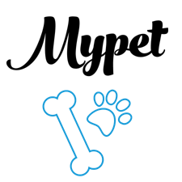

<ion-header>
  <ion-toolbar color="primary">


  </ion-toolbar>
</ion-header>


<ion-content>
  <ion-item>

    
  </ion-item>
  <br>
  <br>
  <ion-item>
    <ion-label color="rut">Usuario </ion-label>
    <ion-input [(ngModel)]="rut" placeholder="12.134.567-K" pattern="18.947.234-K|123" required>
    </ion-input>
  </ion-item>

  <ion-item>
    <ion-label color="danger">Clave</ion-label>
    <ion-input type="password" [(ngModel)]="pass" pattern="123|456" required>
    </ion-input>
  </ion-item>

  <br>
  <br>
  <ion-item>
    <ion-label>Recordar Datos</ion-label>
    <ion-toggle [(ngModel)]="on" disabled="false" (click)='ejecutarAlerta()'></ion-toggle>
  </ion-item>
  <br>
  <br>
  <ion-item>
    <button ion-button icon-only (click)='ingresar()' class="center">
      <ion-icon name="ios-arrow-forward-outline">  Ingresar</ion-icon>
    </button>
  </ion-item>
  <ion-label class="center">¿Olvido su contraseña?</ion-label>
</ion-content>

<ion-footer>
  <ion-toolbar color="primary">
    <ion-buttons end>
      <button ion-button icon-only color="royal" (click)='toast3()'>
        <ion-icon name="md-help"></ion-icon>
      </button>
    </ion-buttons>
  </ion-toolbar>
</ion-footer>